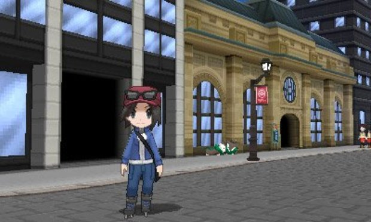
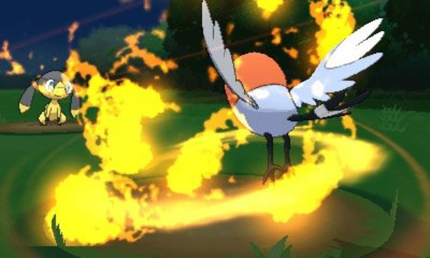

| Summary | Review | Images | Cheats |
Every Pokémon game you've ever played has lied to you. They've assembled a web of deceit wrapped around the idea that the series is, in some way, about being friends with your Pokémon. The best trainers, they've said over and over and over again, are the ones who are the kindest to their monsters. The ones who trust their monsters. The ones who care about their monsters' feelings. You know that's never been true; you've known all along. But with Pokémon X and Y, the developer has finally lived up to the 15-years of lip service. It has finally addressed the thesis of the franchise, making a game where your bond with your Pokémon actually, truly matters.
It matters in combat, when you're battling 3D Pokémon against other 3D Pokémon. Pocket monsters that have high affection for you (as gained by minigames and the newly added ability to pet your Pokémon) will simply perform better--they'll dodge attacks and land critical hits and shrug off status effects more often. Having your Sylveon survive not one, but two attacks after being at one hitpoint just because it loves you so damn much makes a compelling case for being friends with the little guys. It feels random at times, which is sure to enrage the kind of fan that takes the statistical side of Pokémon hyper seriously, but it's entrancing for those willing to allow themselves to be immersed in the charming world.
Thankfully, Pokémon X and Y works hard to make you feel like a part of its universe. The jump to 3D makes for beautiful, lifelike environments in a franchise that has never been all that aesthetically ambitious. From the protagonists--both of whom can be customized with different outfits and hairstyles--to the caves and dungeons, X and Y shows off some of the best visuals on the handheld, where previous games have mostly looked subdued.
If anything, it feels as though the vast environments and detailed Pokémon are simply too much for the handheld. There are occasional framerate drops, and much of the game disables the 3D slider, which is a shame considering how many areas look as though they were designed specifically to take advantage of the added depth stereoscopic 3D delivers.
But while the more detailed world does wonders to make the franchise look more advanced, it also has the downside of making some other elements of the game feel a bit dated. Most notably is asking players to remember the differences between the many types of colorful creatures, which are starting to become trickier to manage now that there are over 700 to choose from. Expecting players to learn which types are strong or weak against others is fine, and worked well for the first few generations when most of the Pokémon looked like the type they were. Part of the fun of the game is in the discovery, but it's impractical to expect players to remember every type of every Pokémon they've ever encountered--something that could be resolved by just giving you access to the Pokédex during battles.
That's not to say no adjustments have been made, and many fix problems you might not have even known you had. Game saves are now near-instant, and the interface has been streamlined to make just about every action from checking the map to trading Pokémon with friends as painless as possible. EXP Share has also received, allowing you to share experience among all of your Pokémon to keep them around the same level. Even more impressive is the change to EV (Effort Value) Training--the previously hidden mechanic has been surfaced and made more manageable.
|  |
While none of the changes feel like they take away from the game, there are some that simply don't live up to their potential. Horde battles pit you against a slew of low-level Pokémon at once, which just ends up feeling annoying rather than compelling, and Sky Battles happen so infrequently that you might forget they even exist. More dissapointing are Mega Evolutions. Certain Pokémon can temporarily evolve mid-battle, and will have different stats than they would in their regular form, but there's rarely a compelling reason not to use the ability since there's no real negative to it. The only restriction in place is that you can only Mega Evolve one fighter per battle, but that's hardly enough to make a huge strategic difference. You're still going to want to do it, because the Mega Evolutions are way too visually impressive to ignore, but don't expect much bite with the bark.
While the franchise has always had an emphasis on playing with friends, no Pokemon game has truly embraced connectivity like X and Y have. The bottom screen displays the P.S.S. (Player Search System), which includes a list of your active friends and nearby players, all of whom can be interacted with in a matter of taps. When a friend is in need, you can even provide them with temporary buffs to help them out. It's compelling and social without being obtrusive.
|  |
Setting up trading and battling were time-consuming and clunky in previous games, but X and Y have integrated it all into experience. Now, you're able to trade or battle from anywhere, with audio chat letting you chastise your friends or ask them to swap specific 'mons with you. You'll still be in your own game off on your own, personal adventure, but you'll definitely feel like you're playing alongside your friends as you play through X and Y.
Even with all of these renovations, innovations, and--yes, we're going to just go ahead and say it--evolutions, Pokémon X and Y still feel like a Pokémon game in the end. Sure, you're going to spend some of the time petting your Pikachu and you get to choose multiple starters, but X and Y eventually land in the comfort zone fans have found themselves in for six generations. Though they don't reinvent the core concept of the franchise, they do a fantastic job of cleaning up the aging mechanics and creating a Pokémon world you'd be crazy not to explore.